Moshi Moshi est un restaurant japonais haut de gamme à Monaco. On cherche un vidéaste pour réaliser régulièrement des reels cinématiques : cuisine, gestes du chef, ambiance de la salle, le tout avec une belle lumière et un vrai soin du détail.
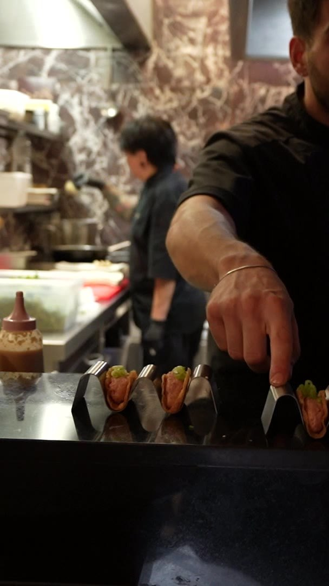
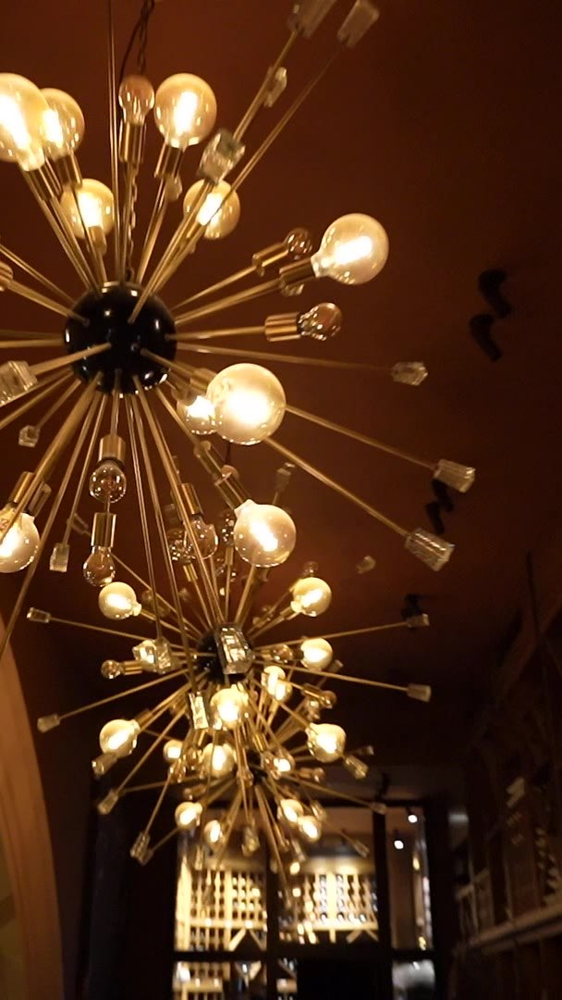
Les reels sont publiés et sponsorisés par nos soins. Le premier tournage sert aussi à caler le style ensemble.
Le compte actuel est propre mais un peu sombre et générique : beaucoup de plats seuls, une salle souvent vide. On veut garder le côté chic et monégasque, mais avec plus de vie, plus de mouvement et plus de détails qui accrochent l'œil dès la première seconde.
Le poisson, la découpe, la précision du geste. Des plans serrés et nets.
Le comptoir en marbre, le lustre, la cave, le service soigné.
Une lumière chaude et maîtrisée, des noirs profonds, aucun plan banal.
Le travail du chef, de la planche à l'assiette, comme une publicité.
La terrasse le soir, la place d'Armes, la salle pleine et l'énergie des Soirées Shibuya.
Saumon, thon, sériole : la lame qui glisse, le son du couteau, au ralenti.
Les doigts qui façonnent un nigiri, les rolls coupés et alignés.
L'aburi en macro, la flamme, le gras qui grésille.
La pince, les finitions, l'assiette qui part en salle.
Le saké versé, les cocktails au bar, la glace, les reflets.
Les plateaux qui traversent la salle, les baguettes, la sauce soja.
Travellings lents dans la salle, la terrasse, la cave, le lustre.
Le DJ, les mains sur les platines, la salle qui se remplit.
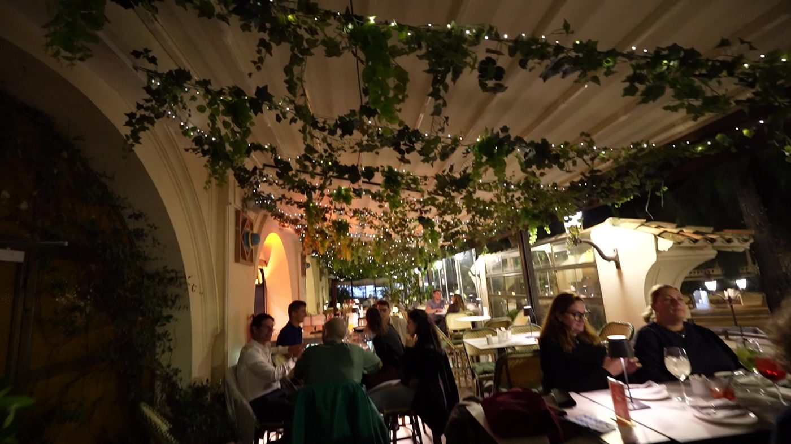
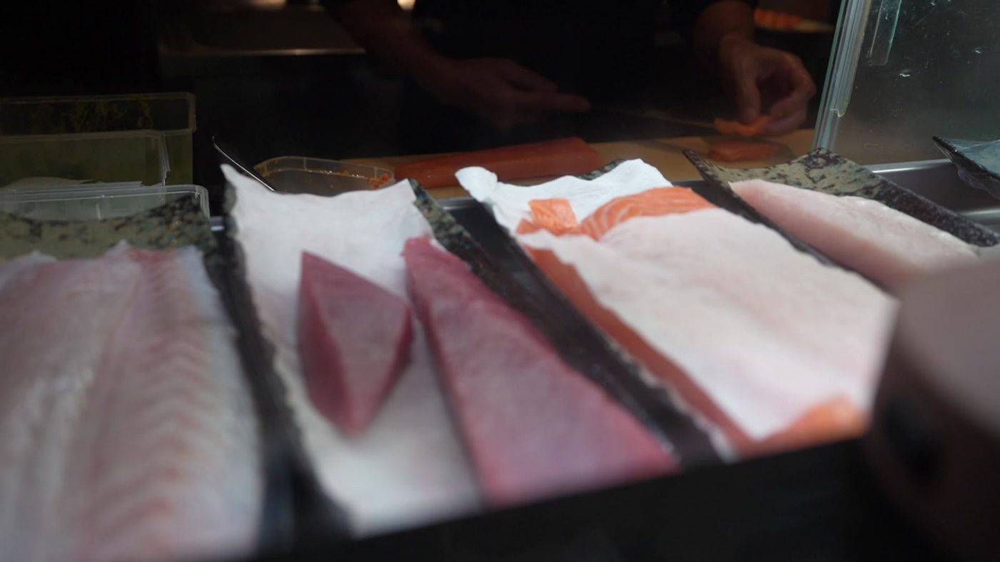
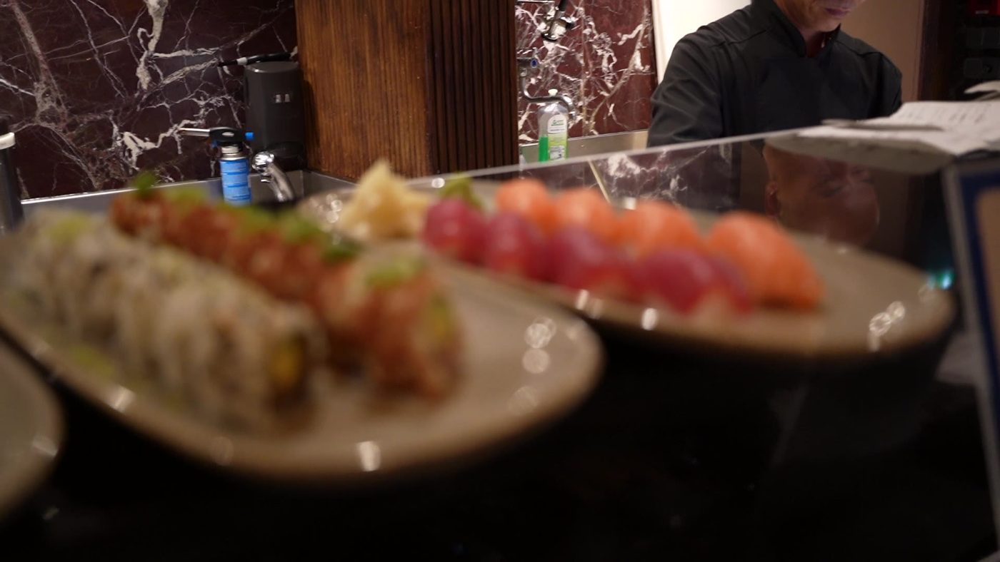
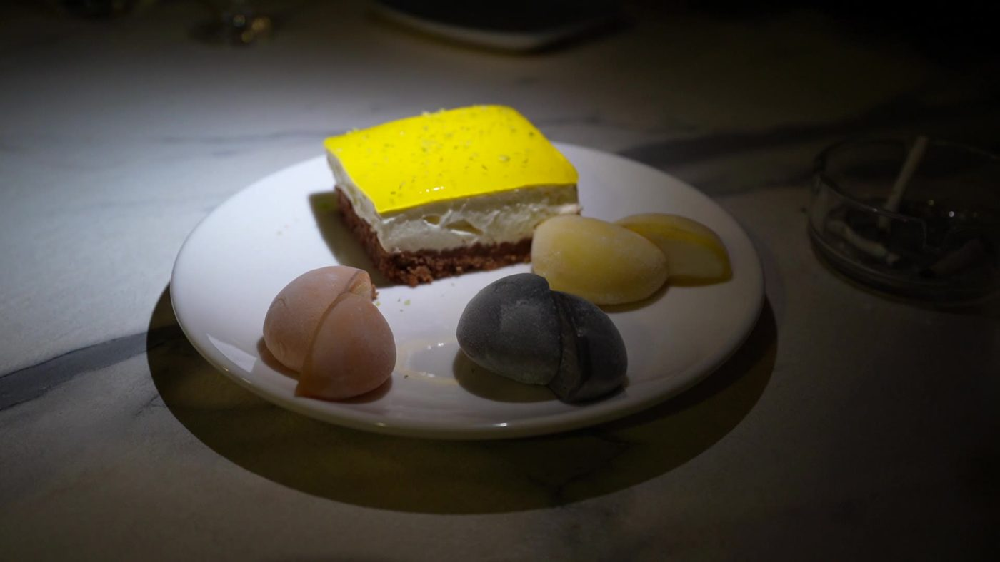
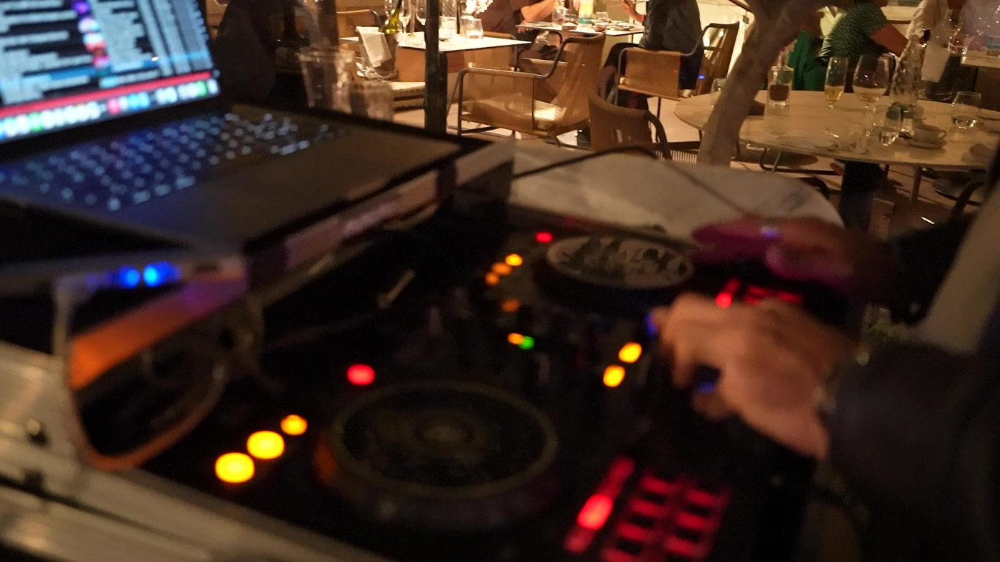
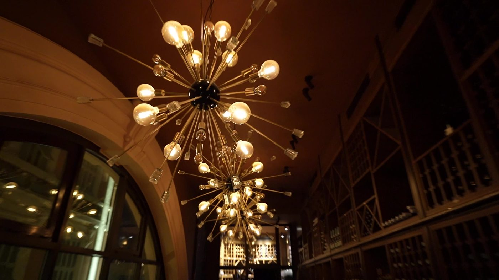
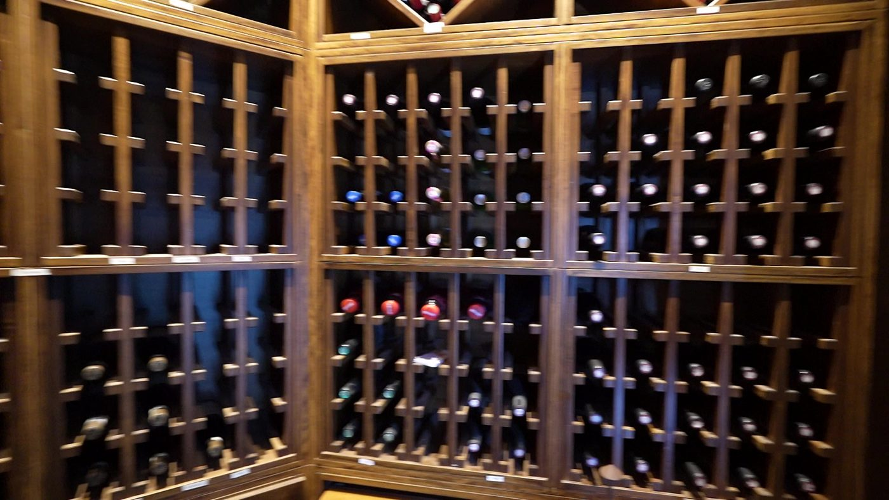
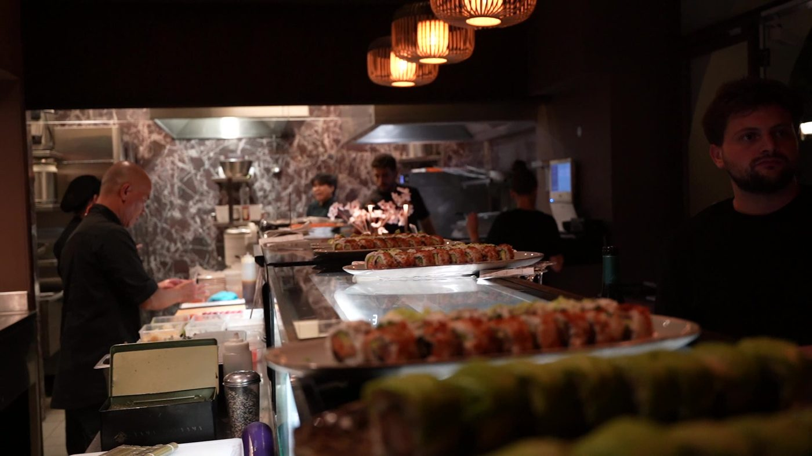
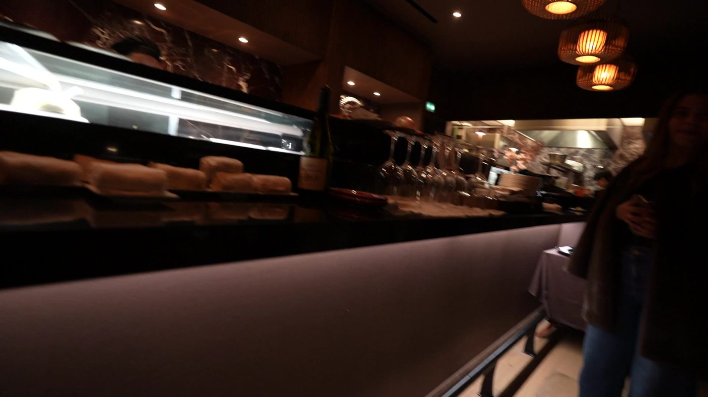
Images tirées de rushes déjà tournés sur place.
Quelques reels qui donnent le ton : la cuisine filmée comme une publicité, une lumière travaillée, des gestes au ralenti. Cliquez pour voir la vidéo.
Vertical 9:16 pour la livraison. Tourner en 4K pour garder de la marge au recadrage.
50 à 120 images par seconde sur les gestes et les liquides.
Une macro pour les détails, une focale plus large pour la salle et la terrasse.
Stabilisateur ou slider : travellings lents, approches, plans qui respirent.
La salle est sombre et chaude : une petite source d'appoint sur les plats est bienvenue.
Prise de son proche pour l'ASMR : couteau, chalumeau, verre, glaçons.
Dans tous les cas, on est flexibles et ouverts à tes idées : si tu vois un meilleur angle ou une autre façon de faire, on en parle.
Les dates exactes sont à caler ensemble, souvent autour d'une Soirée Shibuya ou d'une nouvelle carte.